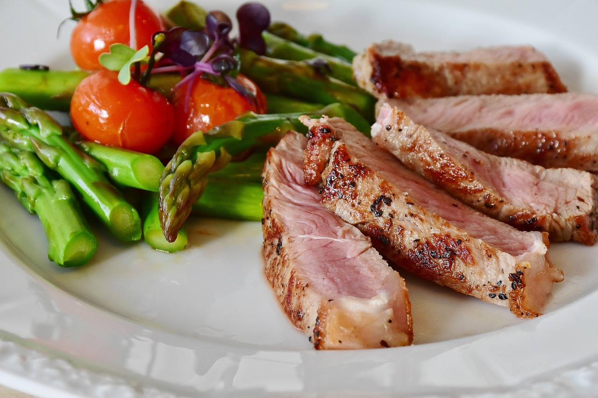

Seu Guia Completo de Nutrição
Alimente-se bem, viva melhor com nossas dicas e orientações nutricionais
Nossos Serviços

Plano Alimentar Personalizado
Criamos dietas específicas para suas necessidades, objetivos e preferências alimentares.

Acompanhamento Nutricional
Acompanhe seu progresso com nossos nutricionistas e ajuste seu plano conforme necessário.
Receitas Saudáveis
Acesso a centenas de receitas deliciosas e nutritivas para manter sua dieta variada.
Dicas de Nutrição

Importância das Proteínas
As proteínas são essenciais para construção muscular e reparo tecidual. Inclua fontes variadas em sua dieta.

Fibras e Saúde Digestiva
Alimentos ricos em fibras melhoram a digestão e promovem saciedade, ajudando no controle de peso.

Hidratação Adequada
Manter-se hidratado é crucial para todas as funções corporais. Beba pelo menos 2L de água por dia.